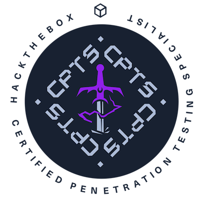

HTB Academy
CPTS
Certified Penetration Testing SpecialistCPTS: conhecimento aplicado ao pentest.
Sobre a certificação
A Certified Penetration Testing Specialist é a certificação prática da Hack The Box que avalia habilidades de pentest em cenários realistas. Sua importância está em reunir capacidade técnica, avaliação de riscos e comunicação dos resultados em um relatório profissional.
Sobre a certificação na HTB ↗